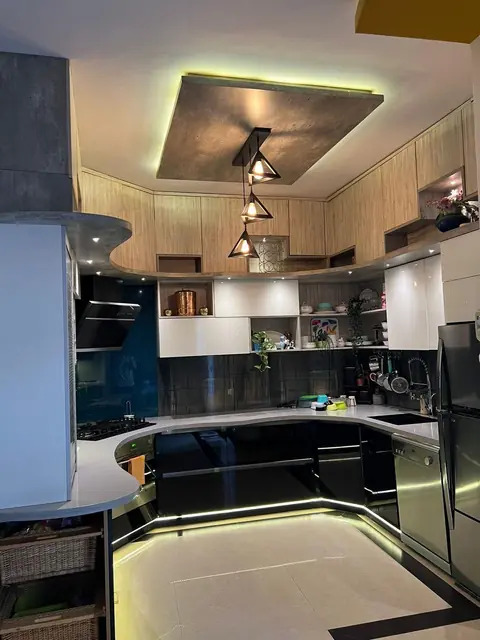
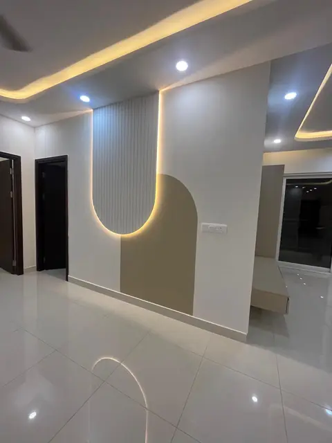
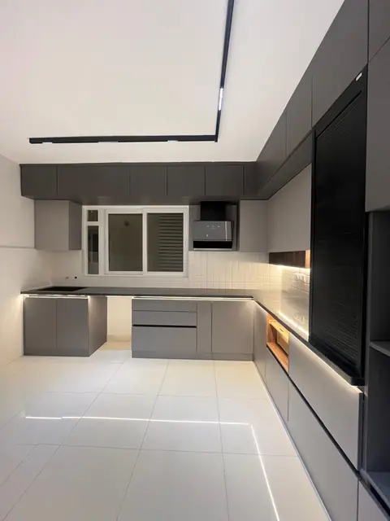

Three directions for the website
Same photos, videos and content, three different looks. Open each on your phone too.

1. Noir
Black and gold to match the banner. Dramatic, with a sliding hero, hover reveals and a quote form.
Open (current live site)
2. Atelier
Light, warm paper tones and large serif type. Calm and editorial, like a design magazine, with project stories.
Open Atelier
3. Monolith
Concrete grey, strict Swiss grid, bold condensed type and a numbered project index. Architectural and precise.
Open Monolith